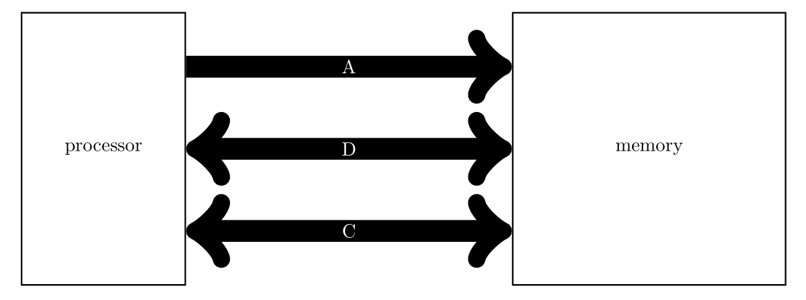

כרמי מרימוביץ
אתר אישי
שילוב מערכת הזיכרון עם המעבד
המעבד והזכרון מחוברים על ידי בס. את הבס הזה אפשר לחלק לשלושה תתי-בסים:
- בס הכתובת
- בס הנתונים
- בס הבקרה

לצרכינו מספיק להתייחס רק לאותות הקריאה והכתיבה בבס הבקרה.
קריאה מהזיכרון
בקריאה יש שני שלבים:
- המעבד שם את הכתובת על קווי הכתובת ודורך את אות הקריאה.
- הזכרון שם את הנתון על קווי הנתונים.
כתיבה לזיכרון
בכתיבה יש שלב אחד:
- המעבד שם את הכתובת על קווי הכתובת, את הנתונים על קווי הנתונים, ודורך את קווי הכתיבה הרלוונטיים.
ברור לחלוטין שמספר מבואות הנתונים, מבואות כתובת, ובקרות קריא כתיבה זהים במערכת הזכרון, במעבד, ועל הבס. אבל מה קורה בתוך המעבד?
נניח מעבד בו רוחב כתובת 32 ביטים. ולכל בית יש כתובת. לנו ידוע שרוחב בס הנתונים הוא 64 ביטים (למתכנת זה בדרך כלל לא ידוע).
אזי מבחינת המתכנת יש לו תמיכה במרחב כתובות של 4GB. אם נרצה לתת תמיכה לכך נצטרך מערכת זכרון ראשי עם 4GB. כיון שרוחב בס הנתונים 64 ביטים המבנה של הזכרון הראשי יהיה 512M × 64. ולכן במערכת הזכרון יהיו 29 קווי כתובת. ובהכרח זה יהיה מספר קווי הכתובת בבס הכתובות.
נשאלת השאלה, מה עושים עם הכתובות בדיוק כיון שבתוך המעבד רוחב הכתובת הוא 32 ביטים.
מטרת בס הנתונים הרחב היא להקטין את מספר התנועות על הבס. לדוגמא.
addi s0, zero, 0
ld s1, 0(s0)
פה המעבד התבקש לטעון את 8 הבתים המתחילים בכתובת 0 לאוגר s1. כלומר היינו מצפים ש-8 הבתים שהזכרון יענה יגיעו מהכתובת 0 עד 7 (כולל). כלומר שלושת הביטים הנמוכים של הכתובת לא יצאו אל הבס. הם לא נמחקים. המעבד משתמש בהם כדי לחלץ את הבתים הנכונים מתשובת הזכרון. לדוגמא.
addi s0, zero, 29
ld s1, 0(s0)
במקרה הזה המעבד יזום שתי תנועות לכיוון הזכרון. תנועה אחת תבקש את כתובת 3 של הזכרון. יחזרו הבתים בכתובות 24 עד 31 (כפי שהמעבד מתייחס אליהן). המעבד יזכור את התוכן של כתובוץ 29 עד 31. ואז המעבד יבקש את תוכן כתובת 4 של הזכרון. יחזרו הבתים בכתובות 32 עד 39 (כפי שהמעבד מבין את הכתובות) והמעבד יצרים את תוכן הבתים בכתובת 32 עד 36 לבתי מהתנועה הקודמת.